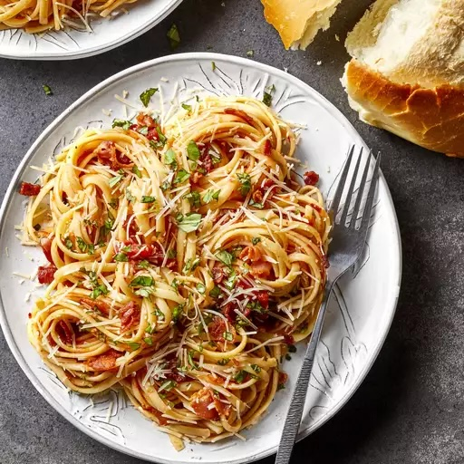

Amatriciana

This is a classic Italian pasta dish. Use fresh basil when it's in season; at other times, use fresh flat-leaf parsley.
Ingredients
- 4 slices of bacon
- 1/2/ cup of chopped onion
- 1 tsp minced garlic
- 1/4 tsp crushed red pepper flakes
- 2 cans of stewed tomatoes (14.5 oz each)
- 1 pound linguine pasta
- 1 Tbsp chopped fresh basil
- 2 Tbsp grated Parmesan cheese
Steps
- Cook diced bacon in a large saucepan over medium high heat until crisp, about 5 minutes. Drain all but 2 tablespoons of drippings from the pan.
- Add onions, and cook over medium heat about 3 minutes. Stir in garlic and red pepper flakes; cook 30 seconds. Add canned tomatoes, undrained; simmer 10 minutes, breaking up tomatoes.
- Meanwhile, cook the pasta in a large pot of 4 quarts boiling salted water until al dente. Drain.
- Stir basil into the sauce, and then toss with cooked pasta. Serve with grated Parmesan cheese.